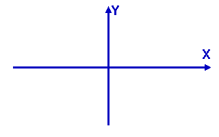
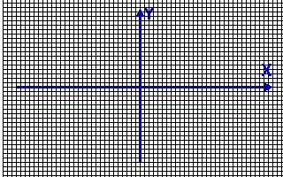
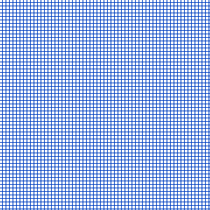
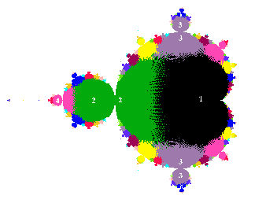
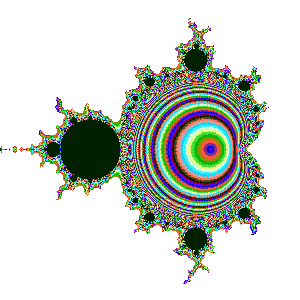

Was sind eigentlich Fraktale ?
 Komplexe
Zahlen sind zweidimensionale Zahlen, wie Z=x+iy oder C=x+iy .
 Man überzieht die ganze Ebene mit einem Punkte-Raster und benutzt die Komponenten x und y an jeweils einem Punkt als Startwerte für eine Funktion Z=f(Z,C), wenn C konstant gesetzt ist, oder ein neues C für jeden Rasterpunkt, aber Z beim Start konstant. Nach dem Ausrechnen der Funktion benutzt man das Ergebnis als neuen Startwert und berechnet die Funktion erneut, und so immer wieder in der gleichen Schleife, und das am gleichen Punkt, bis zum Abbruch. Dann nimmt sich das Programm den nächsten Punkt vor, bis das Bild gefüllt ist. Es
hängt von den Größen x und y am Rasterpunkt und von der Art der Funktion
ab, wo die Zahlenfolge mit der Zeit hinführt.
 Nach Einschätzung dieses Verhaltens bekommt der Punkt eine entsprechende Farbe. Hier einfach schwarz, wenn die Zahlen am Punkt nicht nach Unendlich gehen, und weiß, wenn sie es tun. Man kann auch das Tempo des Größerwerdens farblich kodieren:
Gleiche Farbe steht für
ähnliches Verhalten.  Bild größer / Iterationsverfolgung-Script Die Zahlenfolge kann einem Fixpunkt zustreben, gemeint ist im Beispiel Apfelmännchen der dunkle Bereich, oder zwischen zwei Lösungen hin- und herpendeln, grün markiert, oder auch zwischen drei Lösungen springen und so weiter. Die Zahlenfolge kann schnell oder langsam in gleichartiges Verhalten übergehen, wieder gezeigt durch gleiche Farbe. Jetzt ergeben sich kreisähnliche Ringe um die Null herum: 
|
|
{kind=link}